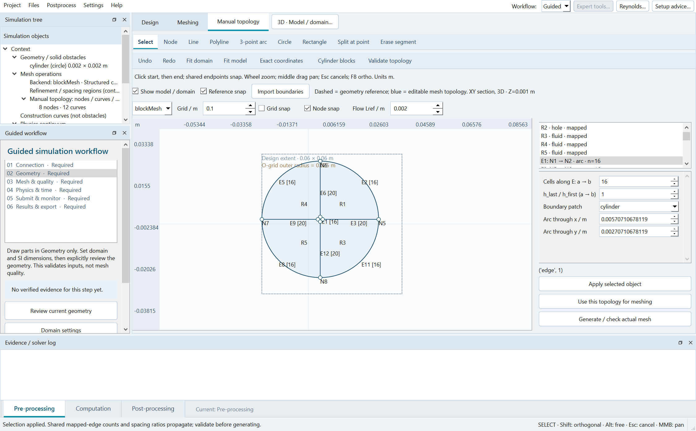
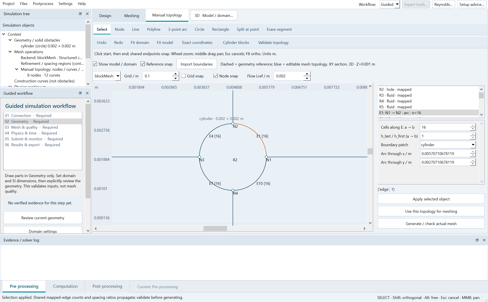

1. Manual mesh in the actual model context
Pre-processing → Manual topology. Geometry outlines, design extent, dimensions and refinement references display by default. Dashed grey/brown/purple outlines are references; blue curves and numbered nodes/regions are editable topology. References do not silently generate or modify the mesh.
- Fit domain shows the full design. Fit model zooms the actual solids; wheel zoom and middle-drag pan remain available. Rulers and positions use metres.
- Import boundaries explicitly copies the rectangular design extent xmin/xmax/ymin/ymax and solid boundaries into editable loops. Solids become holes; Gmsh is selected for the multiply connected fluid surface. This changes the manual topology, not the retained automatic geometry.
- For a circular cylinder outer domain, Cylinder blocks uses the current cylinder centre, diameter, outer_radius, radial/circumferential resolution and grading. It does not use a hardcoded 1 m cylinder. Replacement prompts explicitly; Undo restores the former graph.
- Split boundaries, connect shared nodes, select a closed region and assign mapped/triangle/quad settings and monotone ratios. Apply → Use this topology → Generate/check actual mesh. Inspect actual checkMesh; topology validation alone is insufficient.
XY is the editable cross-section. 2D uses an empty layer; 3D extrudes through depth with spanwise layers. Reference snap targets solid corner/cardinal points; existing topology-node snap has priority. It is not arbitrary 3D CAD meshing.


2. The guide stays inside the workbench
Settings → Guided. The guide is a separate dock below the simulation tree, not a tab competing with the property inspector. Selecting any of six steps changes its instructions only; the current canvas, camera and unfinished line remain. WSL, domain, mesh and physics forms open inside the main-window inspector. Apply updates real inputs. Open results and Show submitted case are explicit navigation actions. Optional expert dialogs remain available.
Both docks remain movable. Reset layout restores this default. Small screens can scroll the guide; the workflow mode is persisted. No new top-level setting window is created by the four guide configuration actions.
3. Current release verification
Two UI engineer phases: reference display/import/idempotence/undo and six guide-step/four embedded-form routes; then scaled off-centre cylinder blocks and three polygon solid holes. Keyboard, mouse, native screenshots and real dictionary/result routing regressions also run. Three fresh 3D four-rank solves completed in this release; exports were rechecked using these same completed cases after the UI fixes, without duplicating simulations.
| Case | Model | Mesh | Cells | Ranks | t / s | Frames | Max Co | Max skew | Max nonorth / ° |
|---|
| OFF_BINDING_R1_20260928_131735 | laminar | Structured cylinder O-grid | 5120 | 4 | 0.04 | 5 | 0.01636293594 | 0.0132284624 | 1.478779333e-06 |
| OFF_BINDING_R2_20260928_131735 | laminar | Manual topology (Gmsh) | 5120 | 4 | 0.06 | 4 | 0.01000421587 | 0.2738817701 | 17.37354128 |
| OFF_BINDING_R3_20260928_131735 | kOmegaSST | Structured cylinder O-grid | 5120 | 4 | 0.1 | 6 | 0.01636283995 | 0.0132284624 | 1.478779333e-06 |
UI evidence · Solver / real export-button evidence · Independent rank/time/MAT audit · Regression tests
Short runs prove software integration, not physical grid/time convergence or validated turbulent forces. General imported curved/hole meshes still require quality inspection; arbitrary CAD and live remote-cluster execution remain outside verified scope. Older reports retain their original release scope. HTML structure/assets are checked; native screenshots were visually inspected, browser-render QA is unavailable.